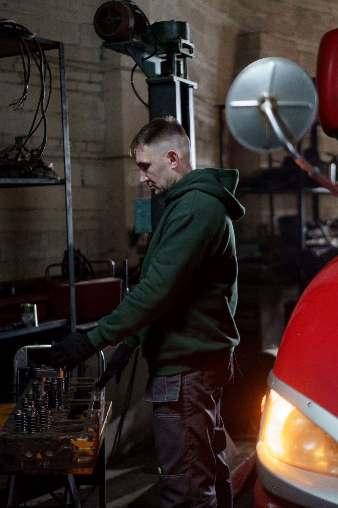

Компьютерная диагностика
Найдём причину неисправности. При ремонте у нас — бесплатно.
Выберите услугу, укажите машину и свободный час — заявка уйдёт мастеру. При ремонте у нас диагностика бесплатно.

Фото — иллюстрация (Pexels), не сервис AVTOHelper
На главной текущего сайта видны посторонние рекламные ссылки, цен нет, а записаться можно только звонком или в мессенджере.
Услуга, машина и свободный час выбираются в одной заявке с телефона — за минуту.
Заявка со слотом уходит мастеру в Telegram; прошедшие часы сегодняшнего дня не предлагаются.
✦Это концепт. С вашими фото и правками будет ещё лучше
Список — с текущего сайта. Стоимость работ на сайте не опубликована — уточняется.
Найдём причину неисправности. При ремонте у нас — бесплатно.
Регулировка углов установки колёс.
цена уточняетсяПоиск и ремонт неисправностей электрики.
цена уточняетсяРазборка, дефектовка, ремонт.
цена уточняетсяМасло в двигателе и трансмиссии.
цена уточняетсяСезонная переобувка и ремонт колёс.
цена уточняетсяПромывка и чистка топливной системы.
цена уточняетсяРемонт сваркой.
цена уточняетсяПодберём запчасти и предложим все варианты.
Формулировки — с текущего сайта.
На все работы. Если что-то сломается — приедете, и это заменят бесплатно.
Без навязывания лишних работ: подскажем, что срочно, а что может подождать.
Платите за ремонт, а не за поиск причины.
Цитаты — дословно с Яндекс Карт, без имён.
«Отличный сервис! Не раз ребята выручали по ремонту машины. Хорошие мастера и адекватные цены на услуги, качество работ тоже на уровне!»Отзыв с Яндекс Карт
«Делал сход-развал по предварительной записи по телефону. Быстро,качественно,профессионально. И недорого.»Отзыв с Яндекс Карт
«Спасибо огромное мастерам автохелпера!!! Поставили ремкомплект рулевой рейки, заменили масло и все за один день!»Отзыв с Яндекс Карт
В рабочей версии отзывы можно подтягивать с Яндекс Карт и отвечать на них — сейчас ответов владельца на странице отзывов нет.
Свободные часы — в пределах графика 9:00–20:00 по красноярскому времени. Цены по видам работ уточняются.
Почта: servicehelper@mail.ru. Ежедневно 9:00–20:00.